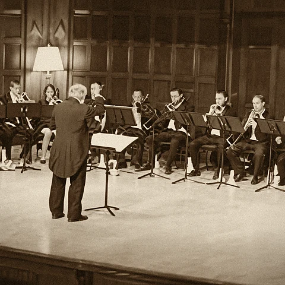
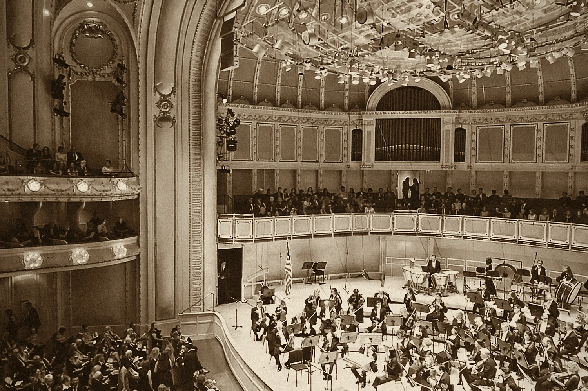
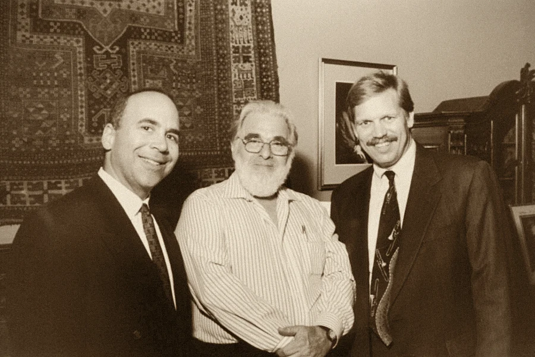
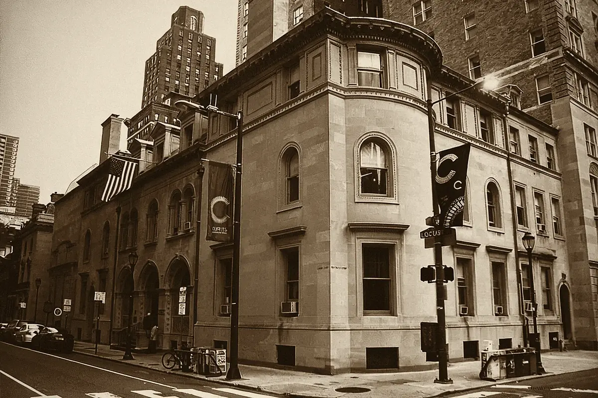
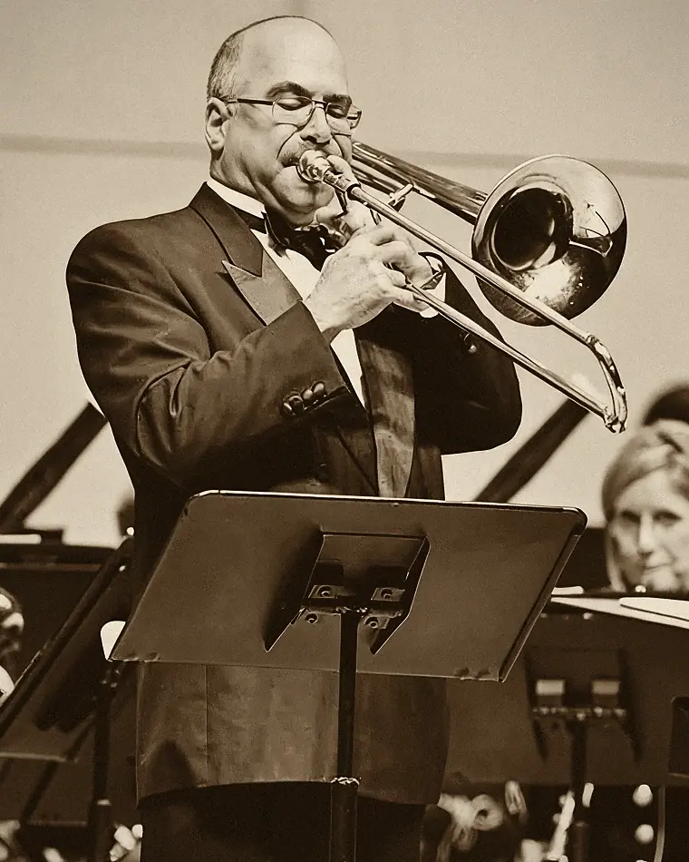
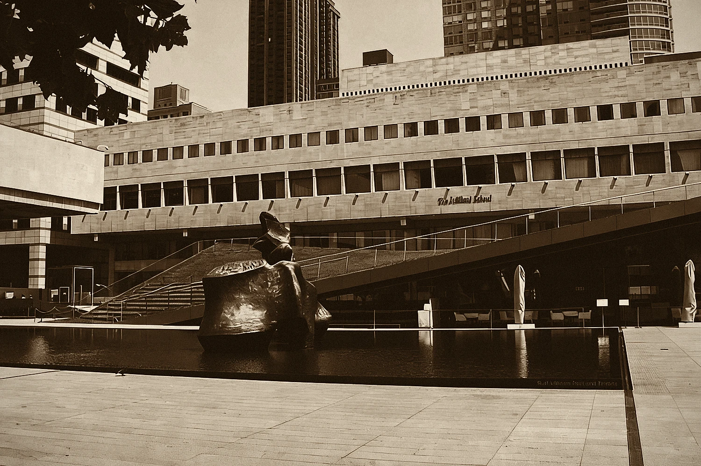

Американские школы тромбона
Это не единая техника и не соревнование городов, а сеть педагогов, оркестров и консерваторий. Пение, дыхание, ансамбль и работа над репертуаром встречаются в разных традициях, а границы между ними проницаемы: Ремингтон в Рочестере называл образцом фразировку Гарделла Саймонса из Филадельфии, а Алесси учился у Додсона в Curtis, прежде чем возглавить тромбоны Нью-Йоркского филармонического.
Истмен: Эмори Ремингтон и Тромбонный хор
Эмори Ремингтон (Emory Remington; 1891 или 1892 — 10 декабря 1971) вёл класс тромбона в Истменской школе музыки в Рочестере с 1922 по 1971 год — около полувека; Brass Bulletin называет 1921-й, год основания школы. Ученики звали его The Chief.[1][2] Год рождения в источниках расходится: Brass Bulletin (1978), ITA Newsletter (1980) и диссертация Университета Северного Техаса (2002) дают 1891, официальная страница Истмена и Wikipedia — 1892. Косвенный довод в пользу 1891 года — столетие Ремингтона торжественно отмечали в 1991-м.
Метод называют «поющей школой»: Ремингтон почти ничего не написал, техника передавалась голосом и показом, а ученик снимал звук с пения педагога. Собственная формула: «If I had a special distinction, it was that I tried to make the trombone sing with a human quality… I didn’t blow into the horn, I sang into it». Разминка состояла из длинных тонов, мягкой атаки, гибкости на обертоновых слёрках, дыхания в легато и гамм-«паттернов» во всех тональностях.[2][3][29]
Тромбонный хор Истмена (Eastman Trombone Choir) основан им же; первый концерт — ноябрь 1941 года. Хоралы Баха и Генделя студенты перекладывали сами. Хор вели Дональд Кнауб (Donald Knaub; 1972–1977 либо до прихода Марселлуса в 1978), Джордж Осборн, с 1978 года — Джон Марселлус (John Marcellus), 36 лет; сейчас соруководители Марк Келлогг и Ларри Залкинд.[4]

Чикаго: Арнольд Джейкобс, «Song and Wind», Кляйнхаммер, Вернон
Чикагская линия сложилась вокруг пары, проработавшей в одном оркестре десятилетия. Бас-тромбонист Эдвард Кляйнхаммер (Edward Kleinhammer) играл в Чикагском симфоническом с 1940 года по июнь 1985-го — 45 лет и семь музыкальных руководителей; тубист Арнольд Джейкобс (Arnold Jacobs) — с 1944 по 1988 год.[5][6] В преамбуле статьи Wikipedia о Кляйнхаммере стоит «1940–1983», что противоречит её же тексту о 45 годах и архиву оркестра: верная дата — июнь 1985 года.[7][5]
Формула Джейкобса делит внимание приблизительно как 85 и 15: song — музыкальный образ в голове, wind — дыхание, приводящее в движение губы. На выступлении 1995 года он говорил: «we never play a brass instrument by air, we play by Song». Книгу об этом собрал его ассистент Брайан Фредериксен (Brian Frederiksen); WindSong Press выпустил её в 1996 году.[8][9]

Кляйнхаммер написал «The Art of Trombone Playing» (Summy-Birchard, 1963), придумал съёмную E-насадку, которую выпускала Holton, и, не преподавая в консерватории, вёл частную студию в чикагском Fine Arts Building.[10][7][28] Чарльз Вернон (Charles Vernon), бас-тромбон Чикагского симфонического с 1986 года, учился у обоих, преподаёт в DePaul University и написал «The Singing Trombone»; свой метод он формулирует через Джейкобса — «playing a brass instrument as being song and wind».[11]

Филадельфия и Curtis
Curtis Institute of Music открылся 13 октября 1924 года; основательница — Мэри Луиза Кёртис Бок (Mary Louise Curtis Bok), обучение без финансовых барьеров для студентов.[12] Первым преподавателем тромбона был Гарделл Саймонс (Gardell Simons, 1924–1930) — тот самый, чью фразировку Ремингтон называл образцовой; Пауль Лоц (Paul Lotz) вёл класс сезон 1925–1926, Чарльз Герхард (Charles Gerhard) — 1931–1942.[13][3]
Студия крошечная: до двух тромбонистов в год, 110 выпускников за всю историю, первый — Эдвард Челленджер (1927). С 1947 года в классе работали Чарльз Гусикофф (Charles Gusikoff), Генри Чарльз Смит III, М. Ди Стюарт (M. Dee Stewart), Гленн Додсон (Glenn Dodson) и Чарльз Вернон; сегодня — Нитцан Хароз (Nitzan Haroz), Мэтью Вон (Matthew Vaughn) и Блэр Боллинджер (Blair Bollinger).[13] В официальном тексте Curtis говорится, что Додсон преподавал «почти 30 лет», но хронология школы даёт 1969–1988, то есть 19 лет.[13]

Отсюда вышли Джозеф Алесси (’81) и Блэр Боллинджер (’86), бас-тромбонист Филадельфийского оркестра с 1986 года.[13][15] Блажевич входит во вступительные требования Curtis напрямую: технический этюд — на выбор Коппраш, Тайрелл или Блажевич, лирический — Бордоньи или Рошю, плюс чтение в альтовом, теноровом и басовом ключах.[14]
Нью-Йорк: Джозеф Алесси
Джозеф Алесси (Joseph Alessi) назначен первым тромбоном Нью-Йоркского филармонического весной 1985 года. До этого он четыре сезона играл вторым тромбоном в Филадельфии и сезон первым в Монреале, а учился в Curtis, который окончил в 1981-м.[16][17] В Juilliard он преподаёт с 1986 года, в Pre-College — с 2007-го.[16]

Сольный дебют с оркестром — апрель 1990 года, Fantasy для тромбона Крестона; далее мировые премьеры концертов Кристофера Роуза (1992, к 150-летию оркестра), Мелинды Вагнер (2007) и Уильяма Болкома (2016). В 2002 году ему присуждена премия Международной ассоциации тромбонистов.[16]
Juilliard разделяет теноровый и бас-тромбон в отдельные программы (BM, MM, GD, DMA): бас — не специализация внутри тенорового класса. Бас-крыло ведут Блэр Боллинджер и Джон Рожак (John D. Rojak), ученик Дона Харвуда; историческая фигура кафедры — Пер Бревиг (Per Brevig), первый тромбон Metropolitan Opera в 1968–1994 годах.[18][15] На своей странице Resources Алесси выстраивает занятия по порядку: техника, этюды, сольная литература, оркестровые трудности; там же опубликованы его каденции к первым двум частям концерта Альбрехтсбергера для альтового тромбона, созданные совместно с Норманом Штумпфом.[19]

Northwestern: Майкл Малкэхи
Майкл Малкэхи (Michael Mulcahy) пришёл в Чикагский симфонический в 1989 году по приглашению Георга Шолти (Georg Solti), а до Чикаго работал в Австралии и Германии. В 1999 году он возглавил тромбоновый класс Bienen School of Music Северо-Западного университета.[20]
Кафедра держится на действующих оркестрантах: тромбон — Рэндалл Хоуз (Randall Hawes), Тимоти Хиггинс (Timothy Higgins), Малкэхи и Р. Дуглас Райт (R. Douglas Wright); Тромбонным хором руководит Рид Кэпшоу (Reed Capshaw), тубу ведут Джин Покорны (Gene Pokorny) и Мэтью Гонт (Matthew Gaunt).[21] Арнольд Джейкобс более двадцати лет преподавал здесь тубу — та же чикагская линия.[6]
Связь с Блажевичем прямая: в изданиях East-West International 2007–2012 годов «Секвенции» готовились с участием Малкэхи.[23] При этом университетская биография фиксирует карьеру, а не особую «методику Northwestern»: вывести школу из текста о педагоге нельзя. В жюри и среди финалистов именного конкурса Кляйнхаммера (ITA, до 25 лет) — Малкэхи, Хоуз и Райт.[22]
Что общего и чем различаются
Кто ведёт класс. В США норма — действующий оркестрант: в Curtis с основания класс вёл концертмейстер тромбонов Филадельфийского оркестра, в Juilliard его ведут первый тромбон Нью-Йоркского филармонического и бас-тромбонист Филадельфийского, в Northwestern — четверо оркестрантов. Истмен из этого ряда выпадает: источники подробно описывают класс Ремингтона и его хор, но не его собственную оркестровую службу. Второе исключение — Кляйнхаммер: оркестрантом он был, но в консерватории не преподавал, и его школа существует как частная студия. В Москве и Ленинграде норма та же: Борк, Блажевич, Щербинин, Григорьев, Волков, Козлов и Венгловский — люди оркестра и театра, а не отдельные теоретики. Эта ось страны не разделяет.
Метод: устно или книга. У Ремингтона письменного курса нет — техника передавалась голосом и показом; из печатного остались «Remington Warm-Up Studies» (1980; второе издание).[29] У Кляйнхаммера книга есть — «The Art of Trombone Playing» (1963), у Джейкобса книга написана не им, её собрал Брайан Фредериксен (1996), у Вернона — «The Singing Trombone».[10][9] В России картина такая же смешанная: у Щербинина печатной школы нет, его наследие — «специальная система ежедневных занятий» и живая практика класса; у Тюрнера две печатные школы (1877 и 1878), у Венгловского — «Ежедневные упражнения для тромбона». Различие, которое материал всё же показывает: американские книги — личные учебники конкретных исполнителей, русские методики чаще вырастают из класса и его преемственности. Дальше этой формулировки источники не идут: учебных планов и программ в них нет.
Роль ансамбля. Истмен держится на постоянном коллективе: Тромбонный хор основан Ремингтоном, первый концерт — ноябрь 1941 года, хоралы Баха и Генделя студенты перекладывали сами; в Northwestern Тромбонным хором руководит Рид Кэпшоу. Для Curtis, Juilliard и чикагской линии учебных ансамблей источники не называют. В Ленинграде ансамбль — квартет, и он тоже вырастает из класса: костяк Квартета тромбонов филармонии составили ученики Козлова. Сходство точное, но неполное: и там и здесь постоянный коллектив — часть обучения, различие в принадлежности — хор Истмена принадлежит школе, квартет — филармонии.
Что считается результатом. Источники не формулируют цели школы; видно только, что в них перечислено как достижение. У Истмена — масштаб: «более тысячи учеников за три поколения» и «сотни». У Curtis — малое число и точность попадания: 110 выпускников за историю, из них названы Алесси и Боллинджер. У Juilliard — сольная карьера: дебют с оркестром в 1990 году, мировые премьеры, премия ITA 2002 года. У чикагской линии — преемственность бас-тромбона: Вернон учился у Джейкобса и Кляйнхаммера. В Москве и Ленинграде на первом месте лауреатство и оркестровое место. Прямое сопоставление здесь невозможно: конкурсная премия и сольная премьера — разные меры, общей шкалы источники не дают.
Отношение к Блажевичу. Разброс крайний. В Curtis его этюд стоит в требованиях прослушивания наряду с Коппрашем и Тайреллом.[14] В Northwestern его имя появляется в работе: «Секвенции» в изданиях East-West International готовились с участием Малкэхи.[23] Для Истмена, чикагской линии и Juilliard его имя в источниках не встречается вовсе — это не значит, что его там нет, это значит, что его нет в источниках. В Москве он фундамент класса, в Ленинграде — репертуар кафедры, без него линия описана слабее.
Границы проницаемы. Школа почти всегда означает имя педагога и круг его учеников, а не город. Боллинджер ведёт классы в Curtis и одновременно в Juilliard; Райхман окончил Петербургскую консерваторию у Волкова, играл в Большом, занимался у Блажевича и увёз его ноты в Бостон; Вернон учился у тубиста и бас-тромбониста одной оркестровой группы. Город — только место, где круг организационно закрепился.
Аналогии с Москвой и Ленинградом
Москва: театр и класс. Московская линия устроена как театральная: Борк пришёл в класс консерватории из оркестра Большого театра, дальше по той же схеме — Блажевич, Щербинин, Григорьев. Класс существует при консерватории, но держится на людях театра. Сходство с Чикаго прямое: метод идёт от оркестранта к ученику голосом и показом, а не через институцию, и частная студия Кляйнхаммера в чикагском Fine Arts Building — ближайший американский аналог московского класса при театре. Различие в закреплении: в Москве та же схема вписана в консерваторию с программами и званиями, в Чикаго она существует без консерватории вообще.
Ленинград: дисциплина и ансамбль. Петербургская линия устроена как оркестровая: Волков — первый тромбон Мариинского театра, «волковский метод» вырос из русского оперного вокала; Козлов играл в оркестре филармонии более полувека, его ученики составили костяк квартета. Сходство с Истменом — в роли ансамбля: и там и здесь постоянный коллектив является частью обучения и площадкой, где проверяется репертуар.
Главное различие — адрес. В США школа живёт внутри университета: Истменская школа музыки, Bienen School в Northwestern, Juilliard с Pre-College, Curtis с обучением без финансовых барьеров; программы описаны, бас-тромбон в Juilliard — отдельная степень. В России школа живёт внутри консерватории и театра: Московская консерватория и Большой театр, Петербургская консерватория и Мариинский с филармонией, гнесинская ветвь как параллельный канал. Отсюда разница биографий: в американских источниках видны переезды между городами (Малкэхи — Австралия, Германия, Чикаго), в московских и ленинградских все должности — в одном городе и в двух-трёх связанных учреждениях.
Где аналогия кончается. Технических параллелей материал почти не даёт. Единственное документированное различие внутри русской традиции — легато: по данным HBS в московской школе оно исполняется без языка и горла, в ленинградской — с возможным участием языка. Для американских школ сопоставимой нормы в источниках нет: формулы Ремингтона и Джейкобса — про пение и дыхание, а не про артикуляцию. Поэтому аналогии выше проведены по устройству, а не по технике.
Пять школ рядом
| Школа | Где | Кто ведёт класс | Метод | Ансамбль | Что даёт ученику |
|---|---|---|---|---|---|
| Истмен | Истменская школа музыки, Рочестер | Ремингтон (1922–1971); преемники по классу в источниках не названы | Устно: голос и показ, печатного курса нет; изданы «Remington Warm-Up Studies» (1980) | Тромбонный хор Истмена, с 1941 года | Поющий звук и ежедневную разминку: длинные тоны, мягкая атака, гибкость на обертонах, дыхание в легато |
| Чикаго | Чикагский симфонический, частная студия, DePaul University, Northwestern (туба) | Кляйнхаммер (частная студия), Джейкобс (1944–1988), Вернон (в оркестре с 1986) | Устно и книга: «The Art of Trombone Playing» (1963), «Song and Wind» (1996), «The Singing Trombone» | Учебного ансамбля источники не называют; ансамбль — сама группа оркестра | Формулу song and wind (85 и 15) и бас-тромбоновую линию от Кляйнхаммера к Вернону |
| Филадельфия и Curtis | Curtis Institute of Music (с 1924), Филадельфийский оркестр | Саймонс, Лоц, Герхард, Гусикофф, Стюарт, Додсон, Вернон; сегодня Хароз, Вон, Боллинджер | Письменного «метода Curtis» источники не показывают; отбор на прослушивании — этюд Коппраша, Тайрелла или Блажевича | Учебного ансамбля источники не называют | Крошечную студию (до двух в год, 110 выпускников) и оркестровое место: Алесси, Боллинджер |
| Московская | Московская консерватория, Большой театр, Гнесинский институт | Борк, Блажевич (1920–1942), Щербинин, Григорьев; сегодня Баташев, Старков, Юсупов | Устно и книга: печатной школы Щербинина нет, фундамент — школы и этюды Блажевича | Тромбонового учебного ансамбля источники не показывают; есть духовой оркестр и сводный оркестр 1947 года | Фундамент из школ и этюдов Блажевича и работу класса над формой, фразой и нюансами |
| Ленинградская | Петербургская — Ленинградская консерватория, Мариинский театр, филармония | Тюрнер, Волков, Рейхе, Козлов, Венгловский; сегодня Андреев, Яковлев | Устно («волковский метод» от оперного вокала) и книга: школы Тюрнера, «Ежедневные упражнения» Венгловского | Квартет тромбонов Ленинградской филармонии, костяк — ученики Козлова | Певучий звук, дыхание и атаку от оперного вокала, репертуар и ансамблевую практику |
Строки о Москве и Ленинграде опираются на досье московской и ленинградской школ; источники к ним перечислены на этих страницах.
Исследования, статьи и ноты
Часть литературы открыта, часть продаётся. Свободно читаются лекция Джейкобса 1973 года в Индиане, диссертации Джона Леблана (Manhattan School of Music, 2000) и Джонатана Роуселла (Торонто, 2018), работа Калеба Ламберта о сольных сочинениях Блажевича (Айова, 2020); главу о Кляйнхаммере из книги 1996 года издательство тоже выложило в PDF.[24][25][8][26][28] В продаже и под охраной остаются «Song and Wind» (1996), «The Art of Trombone Playing» (1963), «The Remington Warm-Up Studies» (1980; второе издание) и «The Singing Trombone» — свободных копий этих изданий нет.[9][10][29]
Ноты в открытом доступе
- Блажевич на IMSLP: «Школа для раздвижного тромбона» (Музгиз, 1925), «Секвенции», концертные дуэты, 70 этюдов для тубы или бас-тромбона.[27]
- Там же — 3 Equali Бетховена, ранние издания этюдов Коппраша, Вобарон (1857), Корнетт (около 1854), Жан Уайт (1885), вокализы Бордоньи.[27]
- «Melodious Etudes» Рошю — авторская обработка вокализов Бордоньи, в общественное достояние не входит; Лафосс (1928) помечен как PD только по законодательству США.
Что послушать
- Проект Калеба Ламберта: первые четыре концерта Блажевича, записи сделаны для диссертации 2020 года.[30]
- Записей Ремингтона, Джейкобса, Кляйнхаммера и Вернона в открытом доступе в проверенных источниках не обнаружено — раздел будет пополняться.
Границы сравнения: учебные ансамбли Curtis, Juilliard, Чикаго и московского класса источники не описывают; сопоставимых чисел учеников нет ни по Чикаго, ни по Northwestern, ни по Juilliard; технические нормы американских школ в том виде, в каком для Москвы и Ленинграда зафиксировано различие в легато, отсутствуют; требования прослушиваний документированы только у Curtis; причинную связь «школа → оркестровое место» источники не показывают. Что осталось неподтверждённым: год рождения Чарльза Вернона; портретов Ремингтона, Джейкобса, Кляйнхаммера и Вернона в общественном достоянии нет; точные годы руководства Тромбонным хором Истмена Джорджа Осборна не установлены; год и ISBN «The Singing Trombone» издатель не указывает; полные тексты Hunsberger (1980), Reynolds (1991) и диссертации Colegrove (1999) в открытом доступе не найдены.
Источники
Номера в квадратных скобках в тексте ведут к этому списку. Материалы по американским школам собраны 16 ноября 2026 года по указанным страницам; расхождения источников показаны в тексте, а не исправлены молча.
Истмен и Ремингтон
- Eastman School of Music: Emory Remington; Past Professors.
- R. Sauer, «Emory B. Remington: A Profile», Brass Bulletin 21, 1978.
- D. Hunsberger, «Memories of Emory Remington», The Instrumentalist, март 1992.
- Eastman: история Тромбонного хора; страница ансамбля.
- Accura Music: The Remington Warm-Up Studies, 2-е изд.
Чикаго: Джейкобс, Кляйнхаммер, Вернон
- Rosenthal Archives CSO: Remembering Edward Kleinhammer, 2013.
- Rosenthal Archives CSO: Remembering Arnold Jacobs, 2015.
- D. Yeo, очерк об Эдварде Кляйнхаммере, ITA Journal, июль 1985 (копия в Web Archive).
- J. Rowsell, Song and Wind in Canada, DMA, University of Toronto, 2018.
- B. Frederiksen, ред. J. Taylor, Arnold Jacobs: Song and Wind, WindSong Press, 1996; запись Open Library.
- The Art of Trombone Playing, Summy-Birchard, 1963 (запись Open Library).
- Chicago Symphony Orchestra: Charles Vernon; интервью Брюса Даффи.
- Kleinhammer: биографический очерк из книги «Song and Wind» (PDF).
Curtis и Филадельфия
- Curtis Institute of Music: History.
- Curtis Institute of Music: Legacy of Trombone and Tuba.
- Curtis Institute of Music: вступительные требования.
- Juilliard: Blair Bollinger (копия в Web Archive).
Нью-Йорк и Алесси
- Juilliard: Joseph Alessi (копия в Web Archive).
- New York Philharmonic: Listening Through Time — Joseph Alessi.
- Juilliard: программа бас-тромбона; John D. Rojak.
- J. Alessi: Resources.
Northwestern
- Northwestern University: Michael Mulcahy.
- Northwestern University: медная кафедра.
- International Trombone Association: конкурс имени Эдварда Кляйнхаммера.
- A. Kharlamov, Blazhevich: The History of Selected Works.
Литература, ноты, записи
- A. Jacobs, лекция 1973 года в Индианском университете (PDF).
- J. LeBlanc, The Legacy of Arnold Jacobs Teaching, DMA, Manhattan School of Music, 2000 (PDF).
- C. Lambert, The Solo Trombone Works of Vladislav Blazhevich, DMA, University of Iowa, 2020 (PDF).
- IMSLP: произведения Блажевича и свободные издания других авторов для тромбона.
- C. Lambert, Blazhevich Recording Project.
- Иллюстрации (Wikimedia Commons): Истменская школа музыки (Daderot, общественное достояние); Orchestra Hall, Чикаго (Kroum, CC BY-SA 4.0); Curtis Institute of Music (Daderot, общественное достояние); The Juilliard School (Yair Haklai, CC BY-SA 3.0); Джозеф Алесси (The United States Army Band, SSG Judy Havrilla, CC BY 2.0).


Свободные лицензии указаны ровно так, как они заявлены на страницах-источниках; права на нотные издания проверяются отдельно.